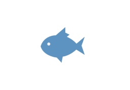

Таиланд — это место, где лучше начинать, а не продолжать свой путь в снорклинге. Для этого в королевстве есть масса курортов с отличной инфраструктурой и два основных водоёма, которые отличаются между собой по красоте и богатству подводного мира.
Острова открыты для туристов с конца марта до середины апреля, а с мая они закрываются для восстановления природы. На берег можно выходить только на островах 4 и 8. Нельзя плавать в море в плавательной обуви. В сезон — видимость великолепная. Попадаются акулы, но очень редко, в основном морские коньки, черепахи, лобстеры, пигмейские танцующие креветки, скаты, мурены, анемоновые поляны и рыбный суп с большим набором ингредиентов. Купаться ночью интересно — если потрогать руками воду, можно расшевелить планктон на сияние. Но это еще и опасно — по ночам к берегу подходит хищная рыба и купание может оказаться чреватым. Лучшие места для снорклинга знают только местные и команды на экскурсионных лодках, а это еще один плюс в пользу группового тура.

Острова Пи-Пи, провинция Краби
На Пи-Пи Доне с берега можно понаблюдать лишь рыбный суп по краям пляже, напротив указанных выше отелей, а так же в районе Манки бич, Ранти Бэй и бухты Ло Мо Ди. В основном вокруг Пи-Пи лишь мертвые кораллы и унылые пейзажи в прозрачной воде, а чтобы увидеть что-то интересное, надо заплывать подальше, например до Sharks Point напротив Лонг Бич. Но имейте в виду — сразу за пляжными буйками, которые вытянулись вдоль берега, вы попадете в невероятно активный и опасный лодочный трафик, что чревато перебитым позвоночником. На Пи-Пи Лей — почти идеальные условия для снорклинга в Таиланде, если бы не НЕРЕАЛЬНОЕ количество туристов, которое местами делает снорк невозможным. Лучше уходить подальше, на середину бухты, но там уже и глубина побольше, и нырять придётся поглубже. Расстраивает мусор на дне, радует высокая возможность увидеть акул. По сообщениям сноркеров — акулы тусят днём в правой половине Мая Бэй прямо около берега, на небольшой глубине. Если пройти островок насквозь от Мая Бэй, то после расщелины в скале с веревками — отличный сайт для снорклинга. На Бамбу приплывает много туристов, из-за них и из-за волн вода мутноватя и ничего толком не видно. Если вы плывете на арендованной лодке, то объясните лодочнику, что вы сюда не купаться приехали, тогда он остановится на неплохих сайтах около берега. Москито айленд радует живым рифом, хорошей прозрачностью моря с рыбным супом, но весьма однообразным и от того — скучным. На Бида Нок и Бида Най хорош не столько сам снорклинг, сколько красивые виды, что открываются под водой. Живности там мало.

Ко Крадан
Главная ценность Крадана — это снорклинг с берега. Уже в 50 метрах от пляжа начинается коралловый риф, немного пострадавший от цунами 2004 года, но в целом — под водой настолько красиво, что здесь проводятся подводные свадьбы. Большая часть острова относится к Национальному парку Чао Май, поэтому выход за разрешенные границы может закончиться уплатой пошлины (200 батов) первому же рейнджеру. Но это случается редко и не должно помешать вам попасть на изолированные пляжи в западной части острова, хотя до некоторых проще доплыть на каяке. Водятся мурены, крылатки, актинии, рыбы-клоуны, а вот акулы не попадались вроде бы никому.

Ко Рок
Лучшее время для посещения: январь и февраль. Снорклинг на островах Рок считается одним из самых увлекательных в Таиланде, сравнимый по уровню с красотами Красного моря. Видимо потому, что это пока еще окраина туризма и приезжие не успели все вытоптать и испортить. Хотя бывалые люди уже видят неприятную разницу между Ко Рок десятилетней давности и сейчас. Снорк прямо с берега, не нужно уплывать на отдаленные сайты, коралловый риф вы найдете 50-100 м от берега. Ночевка хороша тем, что после 16 часов всех туристов увозят. Акропоры, анемоны и горгонарии растут прямо у берега. Из живности: различные груперы, рыбы-попугаи, мурены, скорпены, рыбы-львы, мориш идолы, спинороги — масса всего красивого и интересного. Крупняк сюда заплывает редко, но всё же люди иногда видят и черепах, и акулок.

Ко Тао (хотя правильно говорить Ко Тау) — обычный небольшой островок с развитой инфраструктурой. Здесь большой выбор отелей и резортов, большинство пляжей в нормальном доступе, хотя всё еще остаются дикие уголки. Магазины, банкоматы, туристические сервисы и бытовые услуги, всё здесь присутствует. Наиболее интересные отели в плане «вышел и пошел в море сноркать» находятся бухтах Танод Бэй (Montalay Beach Resort) и Манго Бэй (Mango Bay Boutique Resort). Ко Нанг Юянь (хотя правильно говорить Нанюан) — это три монолита, соединённые песчаными косами. Единственная постройка на острове — отель Nangyuan Island Dive Resort и деревянные мостики вокруг острова, для треккинга.Лучшее время для посещения: середина февраля — середина апреля. Для снорка с берега На Ко Тао есть только два более-менее приличных места, о которых написал выше. Хороший снорклинг начинается на удалении от Тао, например встречаются акулки в Шарк Бэй (но кораллы там померли все). И неплохой снорк около острова Нанг Юань, но там есть фишка — нельзя использовать ласты. И ходить лучше не босиком, а в специальной обуви ибо на дне легко наступить на огурца. Крутой снорк — весь в море, а места знают или местные лодочники, с которым легко договориться, или местные агентства дайвинга, которые возят и любителей снорклинга тоже. Оптимальный алгоритм при недостатке времени: заселиться неподалеку от пирса Мэ Хаад, купить сразу экскурсию на Нанг Юань на весь день и на следующий договориться насчет хороших мест.